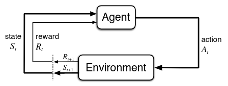
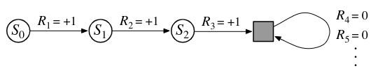
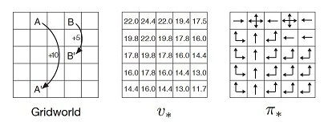

第３章 有限マルコフ決定過程
バンディット問題での各行動\(a\)に価値\(q_*(a)\)を推定した。
有限マルコフ決定過程（有限MDP）では状態\(s\)における行動価値\(q_*(s,a)\)と、最適な行動選択のもとでの状態の価値\(v_*(s)\)を推定する。
エージェントと環境の境界
各ステップ\(t\)ごとにエージェントは環境の状態\(S\)をもとに行動\(A\)を選択する。1ステップ後に、行動の結果となる報酬\(R_{t+1}\)と次の状態\(S_{t+1}\)を獲得する。

\[ p\left(s^{\prime}, r \mid s, a\right)=\operatorname{Pr}\left\{S_{t+1}=s^{\prime}, R_{t+1}=r \mid S_t=s, A_t=a\right\} . \]
上の式からわかるように、マルコフ決定過程では次に起こる事象の確率が現在の状態によってのみ決定される。つまり、各状態は将来的な報酬にどれほど影響するのかといった情報を持たなければいけない。これが満たされるとき、マルコフ性を持つといわれる。
遷移確率は引数を変えても以下のように計算可能である。
\[ r(s, a)=\mathbb{E}\left[R_{t+1} \mid S_t=s, A_t=a\right]=\sum_{r \in \mathcal{R}} r \sum_{s^{\prime} \in \mathcal{S}} p\left(s^{\prime}, r \mid s, a\right), \]
\[ p\left(s^{\prime} \mid s, a\right)=\operatorname{Pr}\left\{S_{t+1}=s^{\prime} \mid S_t=s, A_t=a\right\}=\sum_{r \in \mathcal{R}} p\left(s^{\prime}, r \mid s, a\right), \]
\[ r\left(s, a, s^{\prime}\right)=\mathbb{E}\left[R_{t+1} \mid S_t=s, A_t=a, S_{t+1}=s^{\prime}\right]=\frac{\sum_{r \in \mathcal{R}} r p\left(s^{\prime}, r \mid s, a\right)}{p\left(s^{\prime} \mid s, a\right)} . \]
エージェントと環境の境界とは絶対的な制御の限界を表すものである。エージェントによって自在に変更できないものは環境として扱う。
目的と報酬
学習の最終的な目標は報酬の累積和の期待値を最大化することだと考えられる。
重要なのは、報酬信号は最終目標に対して使うこと。目標達成の方法・過程に対して報酬をあたえてしまうと目標を達成せずに報酬を得るよう学習してしまう可能性がある。
収益とエピソード
強化学習タスクはエピソード的タスクと連続タスクに分類される。
エピソード的タスク
学習に終端状態が存在する。分割できるそれぞれの系列をエピソードもしくはトライアルと呼ぶ。
報酬の累積である期待収益\(G_t\)を最大化する。 \(T\)は最後の時間ステップである。
\[ G_t \doteq R_{t+1}+R_{t+2}+R_{t+3}+\dots+R_T \]
連続タスク
系列を分割できず、学習が制限なく続く。\(T=\infty\)
期待割引収益を最大化する。\(\gamma\)は割引率とよばれる。
\[ G_t\doteq R_{t+1}+\gamma R_{t+2}+\gamma^2 R_{t+3}+\cdots=\sum_{k=0}^{\infty} \gamma^k R_{t+k+1} \]
エピソード的タスクと連続タスクの統一的記法
吸着状態という概念によって、エピソード的タスクと連続タスクの期待収益を同じものとしてみなすことができる。エピソードの終了\(T\)以降を報酬0の自身への遷移だと考える。

連続タスクでは\(T=\infty\)、エピソード的タスクでは\(\gamma=1\)だとして、 次のように式を統一できる。
\[ G_t=\sum_{k=0}^{T-t-1} \gamma^k R_{t+k+1} \]
方策と価値関数
